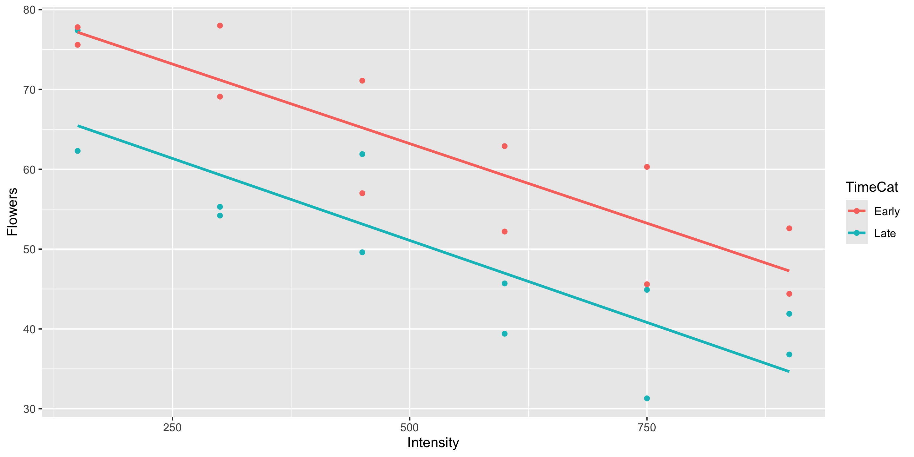

Model Guidance
Grayson White
Math 141
Week 5 | Fall 2025
Goals for Today
- Finish up: Regression with polynomial explanatory variables
- Modeling guidance
- Introduce two measures of model fit: \(R^2\) and adjusted \(R^2\)
Which Are You?
Data Visualizer
Data Wrangler
Model Builder
Linear Regression
Model Form:
\[ \begin{align} y &= \beta_o + \beta_1 x_1 + \beta_2 x_2 + \cdots + \beta_p x_p + \epsilon \end{align} \]
Linear regression is a flexible class of models that allow for:
Both quantitative and categorical explanatory variables.
Multiple explanatory variables.
Curved relationships between the response variable and the explanatory variable.
BUT the response variable is quantitative.
Linear Regression & Curved Relationships
Form of the Model:
\[ \begin{align} y &= \beta_o + \beta_1 x_1 + \beta_2 x_2 + \cdots + \beta_p x_p + \epsilon \end{align} \]
But why is it called linear regression if the model also handles for curved relationship??
Which model is best?
Model Building Guidance
What degree of polynomial should I include in my model?
Guiding Principle: Capture the general trend, not the noise.
\[ \begin{align} y &= f(x) + \epsilon \\ y &= \mbox{TREND} + \mbox{NOISE} \end{align} \]
Returning the 2008 Election Example:
Model Building Guidance
Shouldn’t we always include the interaction term?
Guiding Principle: Occam’s Razor for Modeling
“All other things being equal, simpler models are to be preferred over complex ones.” – ModernDive
Guiding Principle: Consider your modeling goals.
- The equal slopes model allows us to control for the intensity of the light and then see the impact of being in the early or late timing groups on the number of flowers.

- Later in the course will learn statistical procedures for determining whether or not a particular term should be included in the model.
What if I want to include many explanatory variables??
Model Building Guidance
We often have several potential explanatory variables. How do we determine which to include in the model and in what form?
Guiding Principle: Include explanatory variables that attempt to explain different aspects of the variation in the response variable.
Example: Movie Ratings
library(tidyverse)
library(moderndive)
movies <- read_csv("https://www.lock5stat.com/datasets2e/HollywoodMovies.csv")
# Restrict our attention to dramas, horrors, and actions
movies2 <- movies %>%
filter(Genre %in% c("Drama", "Horror", "Action")) %>%
drop_na(Genre, AudienceScore, RottenTomatoes)
glimpse(movies2)Rows: 313
Columns: 16
$ Movie <chr> "Spider-Man 3", "Transformers", "Pirates of the Carib…
$ LeadStudio <chr> "Sony", "Paramount", "Disney", "Warner Bros", "Warner…
$ RottenTomatoes <dbl> 61, 57, 45, 60, 20, 79, 35, 28, 41, 71, 95, 42, 18, 2…
$ AudienceScore <dbl> 54, 89, 74, 90, 68, 86, 55, 56, 81, 52, 84, 55, 70, 6…
$ Story <chr> "Metamorphosis", "Monster Force", "Rescue", "Sacrific…
$ Genre <chr> "Action", "Action", "Action", "Action", "Action", "Ac…
$ TheatersOpenWeek <dbl> 4252, 4011, 4362, 3103, 3778, 3408, 3959, 3619, 2911,…
$ OpeningWeekend <dbl> 151.1, 70.5, 114.7, 70.9, 49.1, 33.4, 58.0, 45.3, 19.…
$ BOAvgOpenWeekend <dbl> 35540, 17577, 26302, 22844, 12996, 9791, 14663, 12541…
$ DomesticGross <dbl> 336.53, 319.25, 309.42, 210.61, 140.13, 134.53, 131.9…
$ ForeignGross <dbl> 554.34, 390.46, 654.00, 245.45, 117.90, 249.00, 157.1…
$ WorldGross <dbl> 890.87, 709.71, 963.42, 456.07, 258.02, 383.53, 289.0…
$ Budget <dbl> 258.0, 150.0, 300.0, 65.0, 140.0, 110.0, 130.0, 110.0…
$ Profitability <dbl> 345.30, 473.14, 321.14, 701.64, 184.30, 348.66, 222.3…
$ OpenProfit <dbl> 58.57, 47.00, 38.23, 109.08, 35.07, 30.36, 44.62, 41.…
$ Year <dbl> 2007, 2007, 2007, 2007, 2007, 2007, 2007, 2007, 2007,…Example: Movie Ratings
Model Building Guidance
We often have several potential explanatory variables. How do we determine which to include in the model and in what form?
Guiding Principle: Include explanatory variables that attempt to explain different aspects of the variation in the response variable.
mod_movies <- lm(RottenTomatoes ~ AudienceScore + Genre + DomesticGross, data = movies2)
get_regression_table(mod_movies)# A tibble: 5 × 7
term estimate std_error statistic p_value lower_ci upper_ci
<chr> <dbl> <dbl> <dbl> <dbl> <dbl> <dbl>
1 intercept -12.5 4.08 -3.06 0.002 -20.5 -4.44
2 AudienceScore 0.975 0.072 13.6 0 0.834 1.12
3 Genre: Drama 6.12 2.64 2.31 0.021 0.916 11.3
4 Genre: Horror 2.06 3.14 0.655 0.513 -4.12 8.24
5 DomesticGross -0.006 0.015 -0.431 0.667 -0.035 0.023Model Building Guidance
Suppose I built 3 different models. Which is best?
Big question! Take Math 243: Statistical Learning to learn systematic model selection techniques.
We will explore one approach. (But there are many possible approaches!)
Comparing Models
Suppose I built 3 different models. Which is best?
- Pick the best model based on some measure of quality.
Measure of quality: \(R^2\) (Coefficient of Determination)
\[\begin{align*} R^2 &= \mbox{Percent of total variation in y explained by the model}\\ &= 1- \frac{\sum (y - \hat{y})^2}{\sum (y - \bar{y})^2} \end{align*}\]
Strategy: Compute the \(R^2\) value for each model and pick the one with the highest \(R^2\).
Comparing Models with \(R^2\)
Strategy: Compute the \(R^2\) value for each model and pick the one with the highest \(R^2\).
mod1 <- lm(RottenTomatoes ~ AudienceScore, data = movies2)
mod2 <- lm(RottenTomatoes ~ AudienceScore + Genre, data = movies2)
mod3 <- lm(RottenTomatoes ~ AudienceScore + Genre + DomesticGross, data = movies2)
get_regression_summaries(mod1) %>% select(r_squared)# A tibble: 1 × 1
r_squared
<dbl>
1 0.457# A tibble: 1 × 1
r_squared
<dbl>
1 0.469# A tibble: 1 × 1
r_squared
<dbl>
1 0.469Strategy: Compute the \(R^2\) value for each model and pick the one with the highest \(R^2\).
# A tibble: 1 × 1
r_squared
<dbl>
1 0.457# A tibble: 1 × 1
r_squared
<dbl>
1 0.469# A tibble: 1 × 1
r_squared
<dbl>
1 0.469Problem: As we add predictors, the \(R^2\) value will only increase.
Guiding Principle: Occam’s Razor for Modeling
“All other things being equal, simpler models are to be preferred over complex ones.” – ModernDive
Comparing Models with the Adjusted \(R^2\)
New Measure of quality: Adjusted \(R^2\) (Coefficient of Determination)
\[\begin{align*} \mbox{adj} R^2 &= 1- \frac{\sum (y - \hat{y})^2}{\sum (y - \bar{y})^2} \left(\frac{n - 1}{n - p - 1} \right) \end{align*}\]
where \(p\) is the number of explanatory variables in the model.
Now we will penalize larger models.
Strategy: Compute the adjusted \(R^2\) value for each model and pick the one with the highest adjusted \(R^2\).
Strategy: Compute the adjusted \(R^2\) value for each model and pick the one with the highest adjusted \(R^2\).
# A tibble: 1 × 2
r_squared adj_r_squared
<dbl> <dbl>
1 0.457 0.455# A tibble: 1 × 2
r_squared adj_r_squared
<dbl> <dbl>
1 0.469 0.464# A tibble: 1 × 2
r_squared adj_r_squared
<dbl> <dbl>
1 0.469 0.462Model Building Guidance: Diagnostic Plots
Always check your diagnostic plots to ensure the model you choose is properly specified!
Model Building Guidance: Diagnostic Plots
Always check your diagnostic plots to ensure the model you choose is properly specified!
Model Building Guidance: Diagnostic Plots
Always check your diagnostic plots to ensure the model you choose is properly specified!
Model Building Guidance
We often have several potential explanatory variables. How do we determine which to include in the model and in what form?
Guiding Principle: Use your modeling motivation to determine how much you weigh interpretability versus prediction accuracy when choosing the model.

Model Building
Key ideas:
- Determining the response variable and the potential explanatory variable(s)
- Writing out the model form and understanding what the terms represent in context
- Building and visualizing linear regression models in
R - Validating model assumptions with diagnostic plots
- Comparing different potential models
Next Week
- Introduction to Probability
- More practice with regression in class